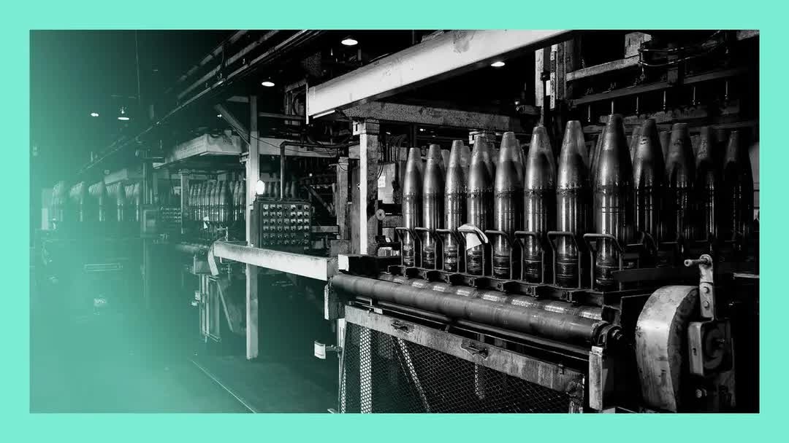

| 标题 | 日期 | 时长 | 资源链接 | 高考 | 四级 | 六级 | 考研 | 专八 | 雅思 | 托福 | GRE | SAT | 其它生词 |
|---|---|---|---|---|---|---|---|---|---|---|---|---|---|

|
2025-07-18 | 31:52 | 📄在线文稿 📁离线文稿 📚PDF | 1146 | 851 | 253 | 678 | 31 | 40 | 148 | 110 | 176 | 149 |
| 2025-07-18 | 3:06 | 📄在线文稿 📁离线文稿 📚PDF | 249 | 162 | 32 | 89 | 3 | 3 | 15 | 4 | 12 | ||
| 2025-07-18 | 20:05 | 📄在线文稿 📁离线文稿 📚PDF | 884 | 700 | 225 | 534 | 27 | 29 | 136 | 91 | 154 | ||

|
2025-07-18 | 26:11 | 📄在线文稿 📁离线文稿 📚PDF | 856 | 641 | 202 | 455 | 21 | 36 | 116 | 84 | 142 | 94 |
|
 |
2025-07-18 | 35:49 | 📄在线文稿 📁离线文稿 📚PDF | 1018 | 872 | 300 | 701 | 24 | 43 | 162 | 116 | 220 | 130 |
| 2025-07-18 | 20:45 | 📄在线文稿 📁离线文稿 📚PDF | 806 | 614 | 217 | 464 | 21 | 40 | 112 | 68 | 117 | 94 |